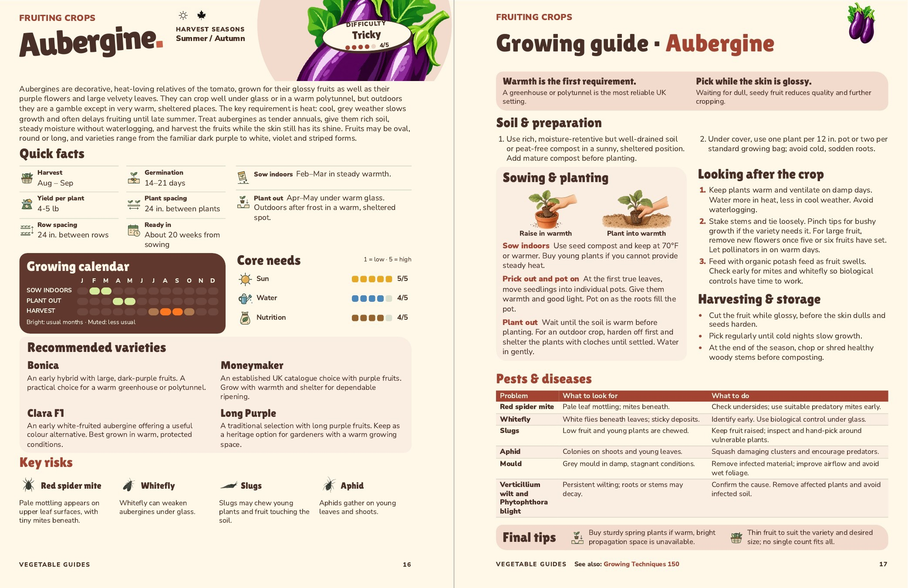

Aubergine
Pages 16–17, amended 5 November. Under Plant out: “Wait until the soil is warm before planting.”
Quick facts have been regrouped to give the longer entries more room. The general soil-acidity sentence is removed under the agreed crop-review guidance. Both pages retain their original artwork, text sizes, four varieties and six selected pest entries.

Approved by John on 5 November. Both editions have been checked as actual PDFs; the main book remains separate.